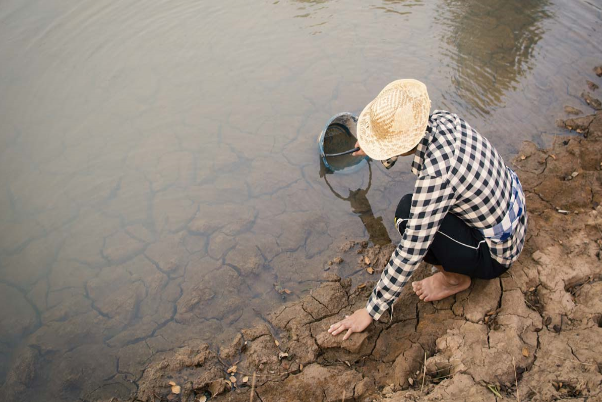
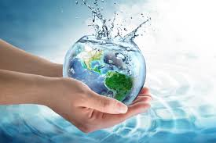

Investigación
En un formulario acerca de la escasez del agua que realizamos obtuvimos que, la mayoría de personas en varías comunidades, se les agota el agua debido al mal uso de esta por otros individuos, mal mantenimiento de tuberías. la falta de pozos de agua que puedan abastecer a la comunidad y la mala distribución del agua. Así mismo, en más del 96% de las ocasiones, la gente utiliza al menos un método para recliclar el agua, y por el contrario, un 4% de las personas, respondió que no utilizaban algún método.
ㅤㅤ
Para terminar nuestra investigación, realizamos una la siguiente pregunta: ¿Qué desafíos piensa que enfrentamos en la gestión sostenibe del agua a nivel local y global? Las respuestas fueron muy diversas, pero en general, pudimos apreciar que la gente piensa que los desafios que enfrentamos son: sequía, incremento de población e industrias, el uso incorrecto del agua, el creciente cambio climático, la contaminación, alteración de ecosistemas y la falta de lluvia.
ㅤㅤ
ㅤㅤ
- 

- 
ㅤㅤ
Impacto del cambio climático
El cambio climático está modificando los patrones globales de precipitacion, afectando la disponibilidad del agua en diferentes regiones. Esto se debe principalmente a:
ㅤㅤ
Aumento de la temperatura global
Incremento de la evaporación de agua de la superficie terrestre, reduciendo la disponibilidad de ríos, lagos y embalses.
ㅤㅤ
Cambios en cliclos hidrológicos
Las temperaturas más altas afectan los ciclos hidrológicos, alterando la distribución y cantidad de lluvia

Propuestas
Como equipo, para seguir motivando a las personas, especialmente a los jóvenes a el buen uso del agua, planteamos algunas propuestas para enfrentar este problema global.
ㅤㅤ
*No tardar demasiado al bañarse
*Cerrar los grifos cuando no se utilizan
*Lavar los trastes sucios en una bandeja y no bajo el chorro de agua
*Ajustar el nivel de agua en la lavadora
*Reutilizar el agua de lluvia
ㅤㅤ
Recuerda: ¡Al reciclar el agua, no solo te ayudas a ti, sino a todos!
Conclusiones
La escasez de agua es un desafío urgente que requiere de acciones tanto personales como a nivel global, en el que debemos ser más conscientes de los efectos que causan en nuestro planeta, así como las consecuencias que enfrentamos. Algunas personas, y esperemos la mayoría, toman diariamente medidas adecuadas para el buen uso del agua, reciclándola para tareas cotidianas. Es por esto y lo anteriormente dicho, que promover el buen uso eficiente y sostenibilidad del agua, es de suma importancia, ya que al tomar buenas medidas, no solo nos ayudamos a nosotros individualmente, sino, nos ayudamos globalmente.